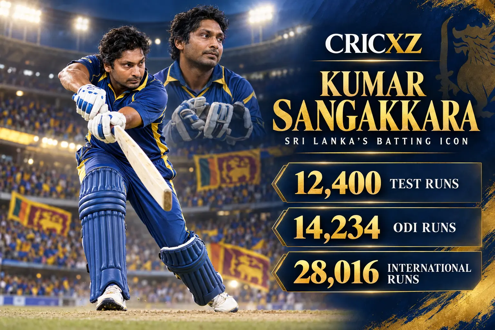
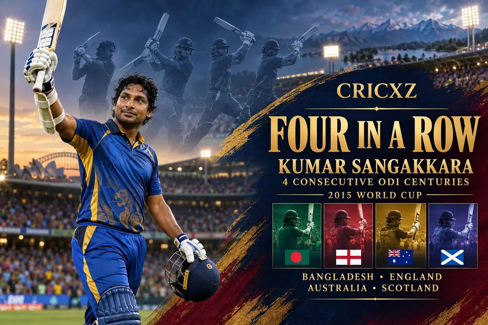

Test Career
- Matches
- 134
- Runs
- 12,400
- Highest score
- 319
- Batting average
- 57.40
- Centuries
- 38
- Double centuries
- 11
- Catches / stumpings
- 182 / 20

Kumar Sangakkara scored 12,400 Test runs and 14,234 ODI runs, completing a 28,016-run international career defined by elegant left-handed batting and elite wicketkeeping.
Career statistics are final.
Sangakkara played his final international match in August 2015. The figures above were checked against ICC and established statistical records.
Across 15 years, Sangakkara combined classical stroke play, concentration and sharp work behind the stumps. His 28,016 international runs place him among cricket's most prolific batters, while his record across formats established him as one of Sri Lanka's defining players.

Sangakkara scored centuries in four consecutive World Cup matches against Bangladesh, England, Australia and Scotland. He became the first men's ODI batter to score four hundreds in four successive innings, completing the sequence during his final World Cup.
Sangakkara recorded 54 wicketkeeping dismissals across 36 World Cup innings, an ICC tournament record at the end of his career. He also helped Sri Lanka reach the 2007 and 2011 ODI World Cup finals before playing a match-winning unbeaten 52 in the 2014 T20 World Cup final.
July 2000 – August 2015
Played 134 Tests, scored 38 centuries and finished with an exceptional batting average of 57.40.
July 2000 – March 2015
Completed a 404-match ODI career with 14,234 runs, 25 centuries and 99 stumpings.
June 2006 – April 2014
Ended his T20I career by helping Sri Lanka win the 2014 world title.
Scored 12,400 Test, 14,234 ODI and 1,382 T20I runs.
Made 38 Test centuries and 25 ODI centuries.
Finished one short of the all-time Test record.
Created the record during the 2015 World Cup.
Shared the world-record stand with Mahela Jayawardene.
Set the wicketkeeping record across 36 innings.
Was inducted in recognition of his outstanding international career.
Won the Sir Garfield Sobers Trophy after an exceptional season.
Received the leading individual award for Test cricket.
Scored an unbeaten 52 in Sri Lanka's title-winning final.
CricXZ is an independent cricket publication and is not affiliated with the ICC, Sri Lanka Cricket or any team.
Read Muttiah Muralitharan's career records, explore Brian Lara's statistics, or browse all CricXZ player profiles.